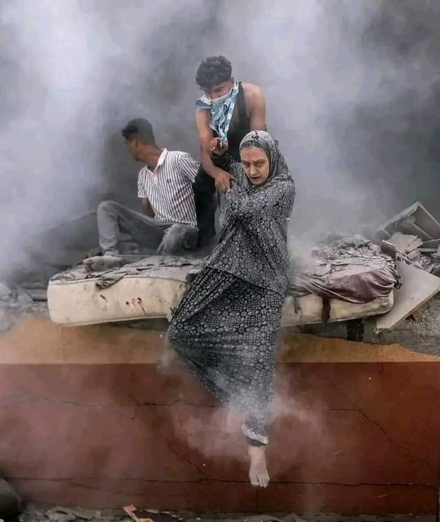

..ﻧدﺑﺎت ٌ وآﻻم ..ﻣﻼك ُ اﻟﻣوت ﯾطﺎرد ُ اﻷﺣﻼم ..ﻋﺻﺎﻓﯾر ُ ﻏزة ﻏطّت اﻟﺳﻣﺎء ..دم ُ اﻷﺷﻼء ﺗﻧﺎﺛر َ ﻓﻲ اﻷرﺟﺎء ٌ ..أم ٌ إﺣﺗرق َ ﻓؤادھﺎ ﻋﻠﻰ طﻔﻠِﮭﺎ ..وأب ٌ ودع َ ﺷﺑﺎﺑﮫ ُ اﻟﺳﺗﺔ ﺑرھﺔ .ﺳﻠب َ اﻟﺻﮭﯾون وﺣﯾد ٌ إِﻧﺗُظِر َ ﻟـ ِ أرﺑﻌﺔ ﻋﺷر ﻋﺎم أﺧذت اﻟﻘذاﺋف ُ ﺗﻠك اﻟرﺿﯾﻌﺔ ذات اﻟﺳﺑﻌﺔ أﯾﺎم.. ﻟﻌل ﱠ ﷲ ﺗﻣﻧﻰ ﻟﮭﺎ اﻷﻓﺿل ﻓﻣﺎ أراھﺎ ﻣن .ظﻠم ِ اﻟدﻧﯾﺎ إﻻ ﱠ ﻗﻠﯾﻼً.. ﻟﯾُﺑﻧﻰ ﻟﮭﺎ ﻗﺻر ٌ ﻣن رﻏد ِ اﻟﯾﺎﺳﻣﯾن وﺷﮭد ِ اﻟﻌﺳل ﺑﻘﯾت ﺗﻠك اﻷﺟﺳﺎم ُ اﻟطﺎھرة اﻟﻣﻣﺗﻠﺋﺔ ﺑﺎﻟدﻣﺎء ِ ﺗﺣت اﻟﺟدران واﻟزﺟﺎج.. ﻓﻣﺎ ﺑﺎﻟﯾد ِ ﺣﯾﻠﺔ وﻟم .ﯾﺗﺑﻘﻰ ﻣﻧﮭم ﺣﺗﻰ ﻗﻠﯾلَ. أﻧﺎ ﻓﻠﺳطﯾن.. أﻧﺎ أم ُ اﻟﺷﮭداء
،اﻟﻧﺻر ُ ﻷﺻﺣﺎب ِ اﻟﻘﻠوب ِ اﻟﻘوﯾﺔ ،ﻓﺄطﻔﺎﻟِﮭم ﺗﺗﺷﻠﻊ ُ ﻷﺷﻼء َ طﻔل ٌ ﻋﻠﻰ ﺣﺎﻓﺔ ِ اﻟطرﯾق ِ ﻣﻘطﻊٌ، رأﺳُﮫ ھﻧﺎ وﻗدﻣِﮫ ھﻧﺎكَ، ﻟﻌﻠَﮫ ُ ﻛﺎن َ ذاھب ٌ ﻟﺷراء ِ ﻗطﻌﺔ ٍ ﻣن ِ ،اﻟﺷوﻛوﻻ ﻓﺄﺧﺗﺎرَه ُ ﷲ طﯾرا ً ﻣن طﯾور ِ ﺟﻧﺗِﮫ اﻟﺟﻠﯾﻠﺔ ِ أم ٌ ﻓﻘدَت طﻔﻠﺗَﮭﺎ اﻟﻌﺎﺟزة ﺧدﻣﺗَﮫ ﺳﺑﻌﺔ َ ﻋﺷر ِ رﺑﯾﻌﺎ ً ﻣزھرا ً ﻟﺗﺧﺗﻣُﮭﺎ ﺑﺎﻹﺳﺗﺳﻼم ِ واﻹﻟﺗﺟﺎء ،ﻟرب ِ اﻟﺳﻣﺎء أب ٌ ﯾﺣﻣل ُ أطﻔﺎﻟَﮫ ﻓﻲ أﻛﯾﺎس ٍ ﺻﻐﯾرة ٍ ﺣوﻟﺗَﮭم اﻟﻘذاﺋف َ إﻟﻰ ﻓﺗﺎﺗﺎ ً واﻟدﻣﺎء ُ ﻋﺎﻟﻘﺔ ٌ ﻋﻠﻰ ﺛﯾﺎﺑِﮭم ،ﻟﺗﺟﻌﻠُﮭم ﻓﻲ درﺟﺎت َ اﻟﻌُﻼ ﻓﻲ اﻟدﻧﯾﺎ اﻷﺧرى
ﻓﺗﺎة ٌ ﺗﻧﺎدي ﻣﺎﺗت ْ ﻛل ﻋﺎﺋﻠَﺗﻲ، اﻟﻠﱠﮭم ﺻﺑرﻧﻲ، اﻟﻠﮭم ﱠ أﻋطﻧﻲ اﻟﻘوةَ ،وأﺧرى ﺗﻛﺗب َ ﻧﻌوة َ ﺻدﯾﻘْﺗﮭﺎ وﺗﻠﺗﺣق ُ ﺑﮭﺎ ﻓﻲ ﻏﺿون ِ ﺳﺎﻋﺎت
ﺳُرﻗت ْ أﻧﺎ ذﻟك َ اﻟطﻔل َ اﻟذي ﱠ أطﻠق َ ﺻراخ َ ﯾﺳﻧﺗﺟد ُ ﺑﺎﻷﻣﺔ ِ ﻷﻧﻘﺎذ ِ أﺧﯾِﮫِ... أﻧﺎ ﺗﻠك َ اﻷم ُ اﻟﺗﻲ ّ ﺻرﺧَت"أوﻻدي ّ ﻣﺎﺗو دون َ طﻌﺎمٌ" أﻧﺎ ذﻟك اﻟﻌﺟوز ُ اﻟذي ِ َ أﻣﺿَﻰ ْ أرﺑﻌِﯾن َ ﻋﺎﻣﺎ ً ﯾﺑﻧﻲ ّ و أﺗت ِ اﻟﺻﮭﺎﯾﻧﺔ َ ﺳﻠﺑﺗَﮫ ُ ﻣﻧْﮫ ُ ﺑﻠﺣظَﺎتٍ.. أﻧﺎ ﺗﻠك َ اﻷم ُ اﻟﺗﻲ ﱠ رﺑَت أوﻻدُھَﺎ ﺑﺎﻟدﻣوع ِ و اﻟﺧوفِ.. أﻧﺎ ذﻟك َ اﻟﻔﺗﻰ ْ اﻟذي ّ رﻛض َ طﺎﻟﺑﺎ ً اﻟﺷﮭﺎدة ِ ﻟﻛﻧَﮫ ُ ﻟﻘﻲ ّ ﻋﺎﺋﻠَﺗِﮫ ﻗﺑﻠُﮫ... أﻧﺎ أوﻻﺋك اﻟذﯾّن َ ﻓرّوا ھﺎرﺑِﯾن َ ﻣن ْ ﻣﻠك َ اﻟﻣوت ِ اﻟذي ّ ﺑﺎت َ ﯾﺧﯾم ُ ﻓوق َ اﻟوطن ِ أﺟﻣﻊَ. ﱠ ُ ؛ اﻧﺎ ذﻟك َ اﻟﻣﺳﺗﺷﻔﻰ ْ اﻟذي ّ اﺣﺗﺿن َ آﻻف ِ اﻟﻧﺎس ِ ﻟﻠﺣﻔﺎظ ِ ﻋﻠﻰ إﺑﻘﺎﺋِﮭم ْﻋﻠَﻰ ﻗﯾد ِ اﻟﺣﯾﺎة ﻟﻛن آﻻف ِ اﻷطﻔﺎل ِ و ﻣﻼﯾﯾّن َ اﻟﺑﺷر ِ اﻟﺻﮭﺎﯾﻧﺔ َ إﻓﺗﻌﻠَت ِ اﻟﻣﺟﺎزر َ اﻟﺗﻲ ّ ﻟم ْ ﯾﺷﮭد َ اﻟﺗﺎرﯾﺦ ُ ﻣﺛﻠُﮭﺎ... َ اﺑﺎدُوا ﺑدﻗﺎﺋقِ... ﺑﺎب ُ اﻟﺷﮭﺎدة ِ ﻓﺗﺢ َ ﻋﻠَﻰ اﻟﻣﻺ ﻹﺳﺗﻘﺑﺎل ِ اﻟﺷﮭداءَ... ذﻟك َ اﻟﯾوم ِ إھﺗزت ِ اﻟﻌروش َ ﻟﻔﺎﺟﻌﺔٍ.. ﻟﺗطﮭﯾرٍﻋرﻗﻲﱟ .. ﻹﺑﺎدة ً ﺑﺷرﯾﺔ ً ھزَت ﻋرش ُ اﻹﻧﺳﺎﻧﯾﺔَ.. ﺗﻠك اﻷﺻوات ُ اﻟﺗّﻲ ﻻ ﺗﻔﺎرق ُ رأﺳﻲ ﺻرﺧﺎت ٌ و اﺳﺗﻧﺟﺎدات ٌ و أھﺎت ٌ و ﺗﻠك َ اﻵﻻم ِ ﺑﺎﺗت
،أﻧﺎ اﻟﻔﻠﺳطﯾﻧﻲ اﻟوﺣﯾد ھﺎ ھﻧﺎ، ﺳﺗﺳﻣﻊ ُ ﻓﻘط ﺻدى ﺑﻛﺎﺋﻲ اﻟﻣﺳﺗﻣر ُ ،أﺑﻛﻲ ﻋﻠﻰ ﻋﺎﺋﻠﺗﻲ ﻋﻠﻰ وطﻧﻲ اﻟﻣظﻠوم، أﻧﺎ اﻟﺿﺎﺋﻊ ھﻧﺎ ﺑﯾن أروﻗﺔ ﺣطﺎم اﻟﻣﺑﺎﻧﻲ ،ﻧﺣن أطﻔﺎل ﻓﻠﺳطﯾن ﻻ ﯾﺣق ﻟﻧﺎ أن ﻧﺣﻠم ﻗوﻟﻲ ﻓﻘط ھل ﯾﺳﺗطﯾﻊ أﺣد أن ﯾﺣﻠم و ھو ﻻ ﻧﺣن ﻻ ﻧﺳﺗطﯾﻊ ُ اﻟﻧوم ﻣن اﻟﺧوف ِ اﻟﻣﺳﺗﻣر، دوي ّ اﻟﻣداﻓﻊ ﯾﻔﻘدُﻧﺎ اﻟﺳﻣﻊ ،ھﻧﺎ وﺣﯾد ٌ أﺑﺣث ُ ﻋن ﻣن ﯾﺷﻌرﻧﻲ ﺑﺎﻷﻣﺎن ﺑﺎﻟﺳﻼمِ، وطﻧﻲ اﻟﻣﺷوه ، وطﻧﻲ اﻟﻣﺣطم، ﻻ أﺳﺗطﯾﻊ ُ أن أﻓﻌل ُ ﺷﯾﺋﺎ ً أو أﺣرك ﺳﺎﻛﻧﺎ ً أﻧﺎ ھﻧﺎ أﺑﻛﻲ ﻟﻌل ﱠ اﻟﻌرب ﯾﻧﻘذون ً ،ﻣﺎ ﺗﺑﻘﻰ ﻣن وطﻧﻲ اﻟﻣﺣﺎﺻر ﻟﻌل ﱠ اﻷطﻔﺎل اﻟﺑﺎﻗﯾن ﻋﻠﻰ ﻗﯾد اﻟﺣﯾﺎة ﯾﺳﺗطﯾﻌون أن ﯾﺣﻠﻣوا أﺣﻼﻣﺎ ً ﺑﺳﯾطﺔ
ﻻ ﺳﻠطﺔ ٌ ﻟﻧﺎ ﺑﺎﻟﺗّدﺧل ، ﺑﺎﻋوا اﻟﻘَﺿﯾﺔ وأﺑﺎﺣوا ﻟﻠﺑﺎﻏﯾن َ ﺑﺄن ﯾَرﻗﺻوا ﻓوق َ أﺷﻼء ِ اﻟﺑﺎﺳﻠﯾن، ﻟﯾُﺷﺎع اﻟﻣوت ﻓﻲ ﻏزة، وﯾﻧدَﻣﺞ ُ اﻟﺗﱡراب ﺑدﻣﺎء ِ اﻟﻣُﺑﺻرﯾن، وطﻔﺢ َ اﻟﻣﻛﺎن ُ ﺑراﺋﺣﺔ ِ اﻟﯾﺎﺳﻣﯾن ﺻﺎﺣت ﻏزة !أﯾن اﻟﻌَرب، أﯾن َ أﺣﻔﺎد ُ اﻟﻧﺑﻲ، أﯾن َ ﺿﻣﺎﺋرُھم ؟ - : رَدت ْ ﺿﻣﺎﺋرُھُم ﻻ ﻋِﺗﺎد َ ﻟﻧﺎ ﻟﻣﺟﺎﺑَﮭﺗِﮭم !! ﻛﺎﻧت اﻟﺣﺟﺎرة ﺳﻼﺣﺎ ً ﻷطﻔﺎﻟِﻧﺎ ﻓﻲ وﺟﮫ ِ اﻟﻣداﻓﻊ - ﻻﻧﻘوى ﻋﻠﻰ إﻓﺗﻌﺎل ُ اﻟﻣﺷﺎﻛل ﻣﻊ ِ اﻟﯾﮭود_ ﻟَﻛﻧﱠﻧﺎ ﻣﻌﺎ ً ﻗﺎدرﯾن َ ﻋﻠﻰ ﻣُﺣﺎرَﺑﯾِﮭم، ﻧﺣن ُ ﺟُﻧد ُ ﻣﺣﻣد، ﻋن أي ﻋِﺗﺎد ٍ ﺗﺗﺣدﺛون ؟!، ﯾﻛﻔﻲ أن - ﻧﻠﺗَﺣِم، أﻟم ﯾُﺧﺑرَﻛُم ﷲ ُّ ﺑِـ وَاﻋْﺗَﺻِﻣُوا ﺑِﺣَﺑْل ِ ﷲ ﱠ ِ ﺟَﻣِﯾﻌًﺎ وَﻻ َ ﺗَﻔَرﱠ ﻗُوا وَاذْﻛُرُوا ﻧِﻌْﻣَت َ ﷲ ﱠ ِ ﻋَﻠَﯾْﻛُم ْ ﴿
ﻟﻧﺎ ﷲ ّ وﻋﻧد َ ﷲ ﺗﺟﺗﻣﻊ ُ اﻟﺧﺻوم، ﻟن ﻧﻐﻔِر َ ﻟﻣن ھﺎن َ ﻋﻠﯾﮫ ِ أَﺣزاﻧُﻧﺎ، ﺳﺗﺑﻘﻰ ﺻرﺧﺎت ُ-
،أطﻔﺎﻟِﻧﺎ ودﻋوات ُ ﺷﯾُوﺧِﻧﺎ ﻋﺎﺋﻘﺎ ً ﻟَﻛم ﯾوم َ ﯾَﺣﻛم َ ﷲ ُّ ﺑﯾﻧﻧﺎ
ﻋزاﺋُﻧﺎ ﻟﺿﻣﺎﺋرُﻛم، ﻻ ﻟﺷﮭداﺋُﻧﺎ
:ﻧﺎدت اﻟﺷّﻌوب اﻟﻌرﺑﯾﺔ
ﻓﻠﺳطﯾن ﯾﺎ ﺟرﺣﻲ أﻧﺎ، ﯾﺎ ﺷﻌب ﻋﻣرو ﻣﺎ اﻧﺣﻧﻰ، ﻟﺗرﺟﻌﻲ أﻧت ِ ﻟِﻧﺎ، ﺑرﻣﻲ أﻧﺎ ﻗﻠﺑﻲ ﺣَﺟر"
ﺟﻣﯾﻠﺔ ٌ ﻏزة، ﺣزﯾﻧﺔ ٌ ھﻲ ﻓﻲ وﺣدَﺗِﮭﺎ
رُﺑﻣﺎ ﻟم ﯾُﺣرك ﻓﯾﻛم ھذا اﻟﻧّص ُ ﺳﺎﻛﻧﺎً؛ ﻷﻧﮫ ُ ﯾﻔﺗﻘر ﻟﻠﻣﺷﺎﻋر، ﻻ ﻋﻠﯾﻛم زرﻓت ُ دﻣوﻋﺎ
اﻷﻣﮭﺎت ُ واﻵﺑﺎء ُ ﯾﻣوﺗون رﻋﺑﺎ ً وﺣزﻧﺎ ً وﻗﺗﻼ ً وﻗﺻﻔﺎً .ﺣﺗﻰ ﻟم ﯾﻌد ﻟدﯾﻧﺎ أﻛﻔﺎﻧﺎ ً ﺗﻛﻔﯾﮭم آﻻ ﺗﺳﺗﺣق ھذه اﻷرض اﻟﻣﻘدﺳﺔ أن ﺗداﻓﻊ ُ ﻋﻧﮭﺎ أﯾﮭﺎ اﻷﻣﺔ اﻟﻌرﺑﯾﺔ؟ آﻻ ﺗﺳﺗﺣقُ؟ .وﷲ ﻟو اﻟﺟﯾوش اﻟﻌرﺑﯾﺔ إﺗﺣدت ﻟﻛﺎﻧت ﻓﻠﺳطﯾن ﺑﯾن أﯾدﯾﻧﺎ ﻣﻧذ ﺳﻧﯾن ﻓﻼ ﺗﻧﻛﺳوا أﻋﻼﻣﻛن ﺣدادا ً ﺑل ﺧذوا ﺑﺎﻟﺛﺄر ِ ﻣﻣن ﻗﺗل أﺑرﯾﺎﺋﻛم واﻗﺻﻔوا ﻣن ﯾرﻓﻊ ُ أﻋﻼم ً اﻹرھﺎب .وإرﻓﻌوا أﻋﻼم ﻓﻠﺳطﯾن ﻋﺎﻟﯾﺎ .ﻓﺑردا ً وﺳﻼﻣﺎ ً ﻋﻠﻰ أرﺿﻲ ﻓﺳﻼﻣﺎ ً ﻋﻠﻰ ﻣن ﯾرﯾدون اﻟﺳﻼم
أﯾن اﻟﺗﺎرﯾﺦ ُ اﻟّذي ﯾﻘول أن ّ اﻟﻌرب َ إﺧوة؟ !أﺻﺑﺣْﻧﺎ ﻧﺧﺟل ُ أن ْ ﻧﺿﺣك... ﻧﺧﺟل ُ أن ﻧﺄﻛل وﻧﻧﺎم وھﻧﺎك ﺷﻌب ٌ ﯾُﺑﺎد ﺑدأ اﻟﻣطر ُ ﻋﻧدھم ﻗﺑﻠَﻧﺎ... ﻣن اﻟﻘذاﺋف... أﻓﻼ ﻧﺧﺟل؟ ..إﻧّﻧﻲ ﻻ أﻟوﻣُﻛم... ﻓﺎﻟﺣُﻛّﺎم ﻗﯾد ٌ ﯾﺄﺳر إﻧﺳﺎﻧﯾّﺗﻧﺎ ..ﻗﯾد ٌ ﻟو ﺗﺣررّﻧﺎ ﻣﻧﮫ.. ﺗﺣررّت ﻓﻠﺳطﯾن وﻟﻛن ﻻ ﺗﺣزﻧﻲ ﯾﺎ ﻓﻠﺳطﯾن ﻓﺄﯾّﺎﻣُك اﻟﻘﺎدﻣﺔ ﺳﺗﻛون ُ ﻣﺛل َ ﺣﺻﺎد ِ ﯾوﺳُف َ ﺑﻌد َ ﺗﻌﺑﮫِ... ...وراﺣﺔ ِ أﯾوب ﺑﻌد ﺻﺑرِه .آﺳﻔﺔ ٌ أﻧﺎ... ﻓﻘد ﺣﺎوﻟت
ِ أﯾﱡﮭذا اﻟﻧّﺎﺟﻲ ﺑﺎﻛﯾﺎ ً وﻓﻠذة ُ ﻓؤاده ھﺎﻣداً أﺗﻠوم وطﻧﻲ ﺑﺟﻣﺎﻟﮫ ِ ودَم ُ اﻟﺣﺑﯾب ِ رﻗد َ ﺑﮫ طﺎل َ ﻟﯾل ُ اﻟﺛّﺎﺋرﯾن وﻟم أﺟد ﺷﯾﺋﺎ ً ﯾُﻧﺎﺟﻲ وطﻧﻲ ﺻرخ اﻟطﱡﻔل ﺑﺷرق ِ اﻟﺻّﺑﺢ، إﻧّﻲ ﻓﻘدت ُ أﻣﻲ ِ!وﺷﺎخ اﻟﺳّؤال ﻋﻠﻰ ﺷﻔﺗﻲ ﻣن ذا اﻟّذي ﯾﺟﯾر ُ وطﻧﻲ ؟ ﻧﺎظرﯾن ﻟﻠﺳّﻣﺎء ﻧظرة اﻟﻣُﺗﻠﮭّف ﻟﻣﺎ ﯾﺣدث ُﻓﻲ وطﻧﻲ . أﯾﮭﺎب اﻟﺷّﺎﻛﻲ" ﻣن ﻛل ذﻟك ورﺑّﮫ ُ أﻋﻠم ﺑِﻣﺎ ﯾﺟري
ﻏزﱠ ﺗﻲ ﻋِزﱠ ﺗﻲ َ!ﻣﺎذا ﻋﺳﺎي َ أﻗول ُ ﻓﻲ ﺣﺿرة ﻏزّة؟ ﻓﺣروف أﺑﺟدﯾّﺗﻲ اﻟﺛﻣﺎﻧﯾﺔ واﻟﻌﺷرﯾن ﺗﻌﺟز ُ ﻋن ﺗﻧﻣﯾق ِ ﻛﻠﻣﺎت ٍ ﺗﻠﯾق ُ ﺑﺻﻣودِك َ ﯾﺎ ﺑﻠد ِ!اﻟزﯾﺗون أﻟﻣُك أﻟم ﱠ ﺑﻲ وﻓﺗك َ ﺟوارﺣﻲ، وﺻوت ُ ﺑﻛﺎء ِ أطﻔﺎﻟِك ﻛرﯾﺎح ٍ ﺷﺟوﺟﺎت ٍ ﻋﺻﻔت ْ ﺑﺄرﻛﺎن ...ﻗﻠﺑﻲ ﻟﺗﺟرّد َ أﺷﺟﺎرَه ﻣن أوراق ِ اﻟﺳّﻌﺎدة.. ﻟﯾﻌﻠن َ ﺑذﻟك ﺧرﯾﻔَﮫ اﻟداﺋم ﻣﺎذا ﻋﺳﺎي أﻗول ﻓﻲ ﺑﻠد ٍ ﻻ ﺗﻧﺟب ُ ﻣن رﺣﻣِﮭﺎ ﺳوى اﻷﺑطﺎل؟ُ ﻣﻊ ﻛل ّ ﺻرﺧﺔ ِ ﻣوﻟود ٍ ﺟدﯾد ﯾﮭﺗز ﱡ ﻛﯾﺎن ٌ ﺻﮭﯾوﻧﻲ ّ وﯾرﺗﻌش ُ ﺧوﻓﺎ ً ﻣن اﻵتِ... ﻓﺣﺟﺎرة …أﺑطﺎﻟِك ﻛﺣﺟﺎرة ٍ ﻣن ﺳﺟّﯾل ٍ أُﻟﻘﯾَت ْ ﻋﻠﻰ اﻟﺻﮭﺎﯾﻧﺔ ﻓﺟﻌﻠَﺗْﮭم ﻛﻌﺻف ٍ ﻣﺄﻛول

..اﻷب ُ دون اﺑﻧﮫ واﻷم ﱡ ﺗزﻓﱡﮫ ﺷﮭﯾداً طﻔل ٌ ﯾﺑﻛﻲ واﻟدﯾن ﻣﺎﺗﺎ ظﻠﻣﺎ ِ...وطﻔل ٌ ﯾﺑﻛﻲ دﻣﯾﺗَﮫ ﺗﺣت اﻷﻧﻘﺎض أطﻔﺎل ٌ ﺧُﻠِﻘُوا ﻓﻲ اﻟزﻧﺎزﯾن.. وآﺧرﯾن ﻓﻰ اﻟﺧﯾﺎم.. ﻓﻠم ﯾروا ﺷﯾﺋﺎ ً ﻣن اﻟﺣﯾﺎة ﺳوى اﻷﻟم واﻟﻌذاب !ﯾﺎ ﷲ ﻛﯾف أﺻﺑﺢ اﻟﺣﺎل؟ وﻟﻛن ﻻ ﺑُد ﱠ ﻟﻠظّﺎﻟم أن ﯾرﺣل َ ﯾوﻣﺎ ً وﯾﺄﺗﻲ اﻟﻧّﺻر ُ ﻣن ﷲ ...وﺟﯾﺷُﻧﺎ اﻷﺑطﺎل ..ﯾﺎ ﷲ ﻋﺟﱢ ل ْ ﻧﺻرَﻧﺎ ﻓﻘد ﺿﺎﻗَت ْ ﺑﻧﺎ اﻷﺣوال
ﻣﺣﺑوﺑَﺗﻲ و ﻣﻌﺷوﻗَﺗﻲ ﯾﺎ أرض َ اﻟﻣﺣﺷرْ ﻏﯾّروا اﺳﻣَك ِ ﻋﻠﻰ اﻟﺧرﯾطﺔ أﻏﺑﯾﺎء ُ ھم وﻗرود ٌ ﺑرﺑر اﻟﻘدس ُ ﻗدﺳُﻧﺎ وﻣن أﻣﻼﻛِﻧﺎ ﻟن ﻧﺗزﺣزحَ.. ﻟن ﻧﺗﮭﺟّر ﺣﺑﱡﻧﺎ ﻟﻔﻠﺳطﯾن َ أﺻﯾلٌ.. ﻧﺗﺟرّع ﻣُﺻﺎﺑَﮭﺎ اﻟﻣُرﱠ ... ﺳُﻛﱠر ..اﻓﻌﻠوا ﻣﺎ ﺗﻔﻌﻠون.. ﻛﯾد ُ اﻟﺷﯾطﺎن ِ ﺿﻌﯾف ٌ و أﺻﻐر ..ﻧﻌم.. ﺧذَﻟَﻧَﺎ اﻟﻌرب.. ﻟﻛن ّ ﻗوّة َ ﷲ ِ ﻣﻌﻧﺎ.. وﷲ أﻛﺑر ..ﻓرﺳﺎن ٌ ﻧﺣن ودﻣﺎء ُ ﺷﮭداﺋِﻧﺎ ﻓﻲ وﺟﮫ ِ اﻟﻌدو ﱢ ﺗزأر ..ﺟﺑﻧﺎء ُ أﻧﺗم.. ﺗﮭﺎﺑون ﺣِﺟﺎرة َ ﺻﻐﯾرِﻧﺎ...وﺗﻣﻛرون..وﷲ ُ أﻣﻛر ..ﻛم ﻣن ﻓﺋﺔ ٍ ﻗﻠﯾﻠﺔ ٍ ﻏﻠﺑت ﻓﺋﺔ ً ﻛﺛﯾرةً.. وﺑطوﻓﺎن ِ ﻗدﺳِﻧﺎ ﻧﻔﺧَر ﻣﺎ اﻟﻘوة ُ ﺑﻌَﺗْﺎدِﻧﺎ.. ﻗوّة ُ اﻟﻣؤﻣن ِ إﯾﻣﺎﻧُﮫ.. ﯾﻘﯾﻧﺎ ً إن ﷲ َ ﺳﯾﻧﺻُر ..ﻣَن ْ ﻟم ﯾﺳﺗطﻊ ْ ﻣﺳﺎﻋدة ً ﻓﻌﻠﻰ ﺳﺟّﺎدة ٍ ﻓﻲ ﺟوف اﻟﻠّﯾل ﯾدﻋو وﯾﺳﮭَر
... ﯾﺎ ﺣﻛﺎم ِ اﻟﻌرب َ أرﯾد ُ أن ْ أطﻠب َ ﻣﻧﻛم ُ طﻠبٌ ھل ﯾﺄﺗﻲ أﺣد ٌ ﻣﻧﻛم ُ و ﯾﺷرح َ ﻟﻲ ﻣﺎ ﺣﺻل َ ..؟ ﻣﺎذا ﺳوف َ اﺳﻣﻲ ﻓﻠﺳطﯾن َ ﺑﻌد اﻵن ِ ؟ ٌ أرض ُ اﻷﻧﺑﯾﺎء َ ؛ أم ﻣﻘﺑرة ُ اﻷﺑرﯾﺎء َ ؟ َ ﻓﻲ ﻛل ِ ﺷﺑر ٍ ﻣن ھذه ِ اﻷرض ِ ﺗﻐطﻲ ّ ﺟﺛﺔ َ طﻔل ٍﻟﯾﺻﻌدُوا إﻟﻰ اﻟﺳﻣﺎء ِ ﻧﺟﻣﺔ ٌ و ﻣﻼك ُ...ﯾﺳﻛﻧُوا اﻟﺟﻧﺔ أﻧﺎﺟﯾﱢﻛم ﯾﺎ ﻣﻌﺷر َ اﻟﻌرب ُ إﻟﻰ ﻣﺗﻰ ﺳﻧﺑﻘﻰ َ ﻧﻧﺗظر اﻟﺑﺎرﺣﺔ َ اﻟﺷﺎم َ و اﻟﯾوم َ ﻏزة ّ و ﻣن ﯾدري رﺑﻣﺎ ﻏدا ً ﻣﻛﺔ ِ... أﻧﺗﮭﻛُوا ﺣرﻣﺔ َ ﻣﺳﺟدِﻧﺎ و دﻣﱠر ُ ﻛﻧﯾﺳﺗِﻧﺎ و اﻵن أﺻﺑﺣت ُ أﺧﺎف ُ ﻋﻠﯾك َ ﯾﺎ أزھرﻧﺎ ِ..أﻟف ُ ﺳﻼم ٌ ﻋﻠﯾﻛﻲ ﯾﺎ أرض َ اﻷﻧﺑﯾﺎء ُ ... أﻟف ُ ﺳﻼم ٌ ﻋﻠﯾﻛﻲ ﯾﺎ ﺑﻠد َ اﻷﺑرﯾﺎء
... ﯾﺎ أطﻔﺎﻟﻧﺎ ﻟﻛم ُ اﻟرﺣﻣﺔَ ... دﻋوﻧﺎ ﻧﻧﺗظر َ ﻏدا ً رﺑﻣَﺎ ﯾﻛون َ أﺣﻠﻰ ُ ﺣﺳن ﻋﻠﻲ ﺟدﯾد آﺳف أﺻدﻗﺎﺋﻲ اﻟﺟرح اﺻﻌب ﻣن اﻟوﺻف
ﻣﺎذا أﻗول ُ ؟ ِ ﻣﺎذا أﻛﺗب ُ ؟ ِوﻟﺳﺎﻧِﻲ ﻋﺎﺟز ٌ ﻋن اﻟﻛﻼم َ وﻗﻠﻣِﻲ ﻋﺎﺟز ٌ ﻋن اﻟﻛﺗﺎﺑﺔ ِ واﻟوﺻف ِﻣن ھول ِ اﻷﺣداث َ واﻟﻣﺷﺎھد واﻟﻘﺻف ُ ﯾﺣﯾط ُ ﻋﻠﻰ أھل ِ ﻏزة ﻓﻲ ﻛل ﻣﻛﺎن ٍ ، ﻓﻲ ﻛل ِ ﻣﻧطﻘﺔ ٍ ، ﻓﻲ ﻛل ِ اﻟزاوﯾﺎ واﻷزﻗﺔ ...ﻗُﺻﻔت اﻟﻣﻧﺎزل َ واﻟﻌﻣﺎرات َ ﻓوق َ رؤوس ِ أﺻﺣﺎﺑِﮭﺎ ﺑدون ِ رﺣﻣﺔ ٍ وﻻ ﺷﻔﻘﺔ َ وھل ِ أﻛﺗﻔوا ﺑﻌد ھذا اﻟدﻣﺎر َ واﻟﺧراب ً ﻻ ﻻ .... ﻟم ﯾﻛﺗﻔوا وﻣﺎ زاﻟت ِ اﻻﻣﺔ َ اﻟﻌرﺑﯾﺔ َ ﻧﺎﺋﻣﺔ
واﻟﻌدو ﻣﺎ زال َ ﯾﻘﺻف ُ ﻛل أﻧﺣﺎء ِ ﻏزة ﺑدون رﺣﻣﺔٍ اﻟﻣﺳﺎﺟد ُ ﻗُﺻﻔت واﻟﻣدارس ُ ﻗُﺻﻔَت واﻟﻣﺳﺗﺷﻔﯾﱠﺎت ﻗُﺻﻔَت ﻣﺎ ﻋﺎدت ِ اﻟﻣﻼﺟﺋﺎ آﻣﻧﺔ ٌ ﻷھل ِ ﻏزة ﻟﯾﻠﺟﺋوا إﻟﯾﮭﺎ أﯾن َ ﯾذھﺑون أﯾن َ ﯾﻠﺟﺄون
ھﯾﺎ أﯾﮭﺎ اﻷﻣﺔ ً .ﻟﻧﻌود ﻟﻠﻌروﺑﺔ اﻟﺣﻘﯾﻘﯾﺔ .ﻟﻧﺗﺣد وﻧُرﺟﻊ اﻟزﯾﺗون ﻓﻠﺳطﯾﻧﯾﺎ ً أﺻﯾﻼ ِ .ﻟﻧﺣﻣل َ ھذه اﻟﻧﻛﺑﺔ وﻧطﯾر ُ ﺑﮭﺎ وﻧرﻣﯾﮭﺎ ﻣﺎوراء اﻷﺑد ً ﻟﻧزرع ﻣﻛﺎن ﺗﻠك اﻷﺷﻼء اﻟﻌﺎﺋدة ﻟطﻔل ٍ رﺿﯾﻊ أﺻﺑﺢ ﻣن طﯾور اﻟﺟﻧﺔ، وﻟوﻓﻲ ٍ ﻷﻣﺗﮫ .وﺷﻌﺑﮫ وﻓﻠﺳطﯾﻧﯾﺗﮫ ورود .ﻟﻧﺟﻌل ﻣن ﻓﻠﺳطﯾن ﺟﻧﺔ اﻷزرھﺎ، ﻧﻐرﻗﮭﺎ ﺑﺎﻟﻼﻓﻧدر واﻟﯾﺎﺳﻣﯾن .ﻧﻣﻠﺊ ُ ﻗﺑور اﻟﺷﮭداء ﺑﺎﻟﻔل واﻟزﻧﺑق .ﻟﻧﻌﺑر َ ھذه اﻷزﻣﺔ، وﻧُﺻﻠﻲ ﺟﻣﯾﻌﻧﺎ ظُﮭر َ اﻟﺟﻣﻌﺔ ِ ﺑﺟﺎﻣﻊ اﻟﻘدس
ﻧدﻋو ﻟﺗﻠك اﻷرواح اﻟطﺎھرة، ﻧﻔرﺣﮭﺎ وھﻲ ﺗراﻧﺎ ﻣن اﻟﺳﻣﺎء أﻧﻧﺎ .إﺗﺣدﻧﺎ .ﻟﻧﺧرج ﻣن ذاك اﻟﻛﺎﺑوس وﻧﻣﺿﻲ ﻣﻌﺎ ً ﻟﺗﺣﻘﯾق ﺣﻠم اﻟﻌﯾش ﺑﺟﻧﺎن اﻟﻧﻌﯾم .ﻧﺻﻠﻲ ﻓﻲ اﻟﻘدس، وﻧﻌﻣر ُ ﻏزة ﻣﻌﺎً، ﻧﺄﻛل ُ ﻓﻲ ﺟﻧﯾن وﻧزور اﻟﻘﺑور اﻟﻌظﻣﺔ .ﻟﻧﮭم ﺟﻣﯾﻌﺎً.. ﻟﻧﻧﺧذل وﻧﻘﻊ وﻧﻧﮭض وﻧﻧﺗﺻر .ﻟﻧﻧﺗﺻر ﯾﺎﻋرب
ﺗﻌﺻر َ ﻗﻠوﺑِﻧﺎ و ﻋﻘوﻟِﻧﺎ... ﻟﻛﻧَﮭم ﻓﻠطﺳﯾﻧﯾﯾُن َ ﻗوم ٌ ﻻ ﯾﮭﺎﺑُو اﻟﻣوت َ ﺑل ِ ﯾﺣﻠﻣُون ﺑﺎﻟﺷﮭﺎدة ِ ﻗومٌ َ ﻧﺷﺄو ﻋﻠَﻰ رواﺋﺢ ِ اﻟدم َ و ﻋﻠَﻰ اﻟﻣﺟﺎزر ِ و ﻟﻛﻧَﮭم ﺑﺎﻗُون ﺻﺎﻣِدُون ﺷﺎﻣﺧُون و ﺑﺈذن ِ ﷲ ﺳﯾﻧﺗﺻرُون و إن ﱠ ﻧﺻر َ ﷲ ﻟﻘرﯾب ٌ و رب ِ اﻟﺳﻣﺎء َ ھﻧَﺎ ھو اﻟﻣﻧﺗﻘم َ اﻟﺟﺑﺎر ﻓﻠطﺳﯾن َ اﻟﻌزة َ و اﻟﻛراﻣﺔ َ ﻓﻠﺳطﯾن َ ﻟن ْ ﺗرﻛﻊ َ إﻻ Ϳ ﻟﺑﯾك ِ ﯾﺎ ﻓﻠﺳطﯾن